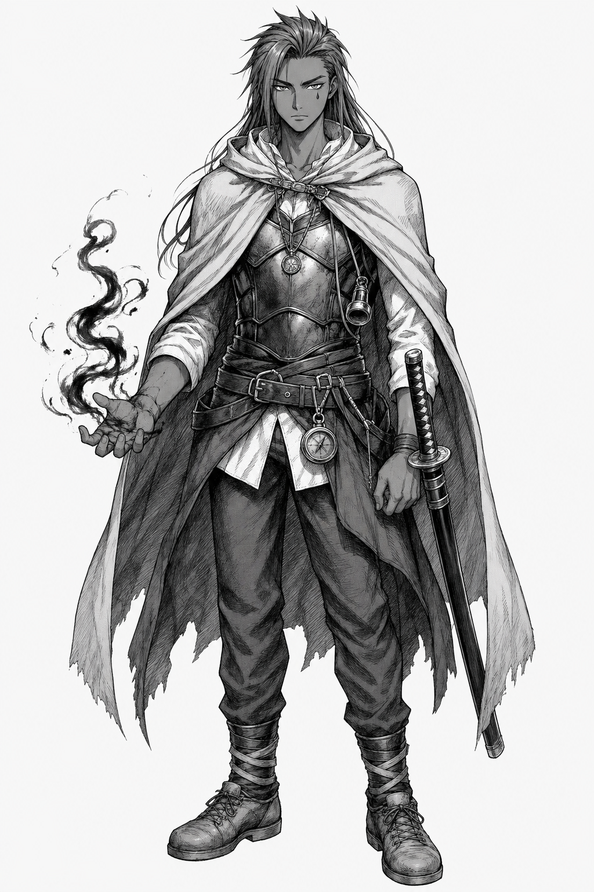
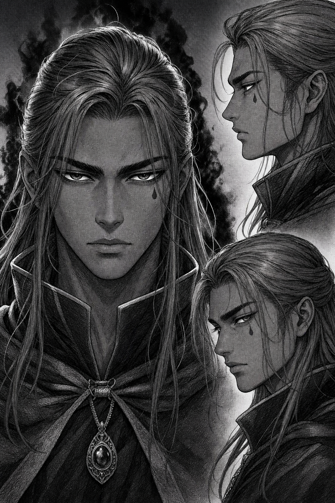
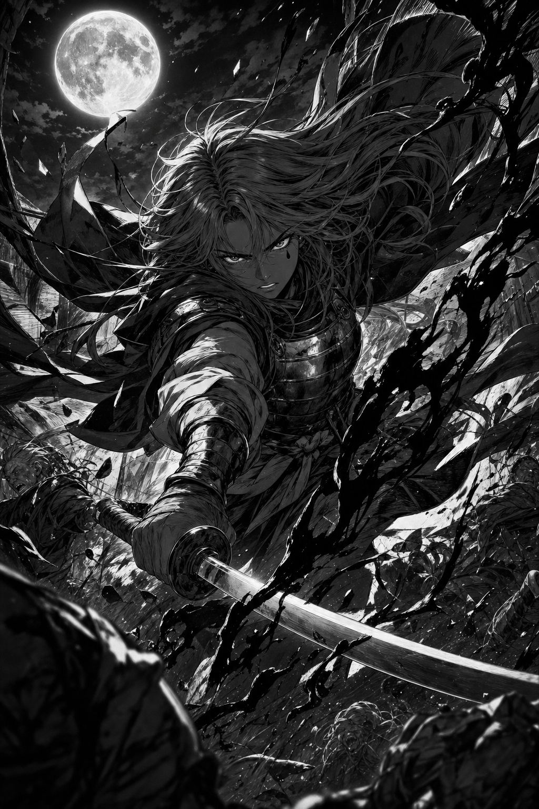

Artes para Análise — clique para ampliar



Ficha
- Nome
- Nazura Eidhame
- Apelido
- Domador das Trevas
- Idade
- 18 anos — aniversário em 25/07
- Altura
- 1,75m
- Gênero
- Masculino
- Aparência
- Pele morena, olhos castanho claro, cabelo castanho claro
- Natalidade
- Kriston, cidade Klis-Gany do clã Callardian's
- Familiares
- Hirashi (pai, desaparecido) · Hiromi (mãe, falecida)
- Cargo
- Líder da Resistência 01 (Pilar 01)
- Neo
- Controle da Escuridão
- Neotipo
- Perdida (Inicial — fase oculta)
- Fase
- Inicial
- Armamento
- Katana Ilamia — pertencia à sua falecida mãe, Hiromi
- Vestimenta
- Manto, peitoral (armadura), camisa, calça e sapato
- Acessórios
- Colar (presente de Kiota), monóculo (luneta), bússola
- Habilidades
- Especialista em armas e armadilhas, ampla área nas artes marciais, rastreador, caçador, estrategista, leve conhecimento em primeiros socorros
Observações de Campo
História — Passado
Descendente do clã Eidhame do Reino Bellum — conhecido como o clã dos Assassinos das Sombras — e nascido no clã Kenny de Kriston, Nazura foi registrado como um Kenny ao nascer: seus pais temiam que o antigo clã de Hirashi viesse atrás do menino por causa da Neo da Obscuridade do velho conto "Domador das Trevas, o Bestiário Obscuro". Do pai, herdou o treinamento no estilo dos assassinos; da mãe, Hiromi Kenny, a educação de um guerreiro honroso e protetor.
Aos sete anos, presenciou a guerra entre Kriston e o Reino de Lake Crystal invadir a cidade onde morava. Hirashi o encontrou debaixo da cama, olhando nos olhos da mãe ensanguentada no chão, enquanto o menino recitava um verso da fábula que ela lia todas as noites antes de ele adormecer — "A Luz Entrelaçando os Céus":
Pai e filho escaparam pelas espreitas de Kriston até um refúgio na floresta além das muralhas — A Resistência — onde, com o passar dos anos, Nazura encontrou seus melhores amigos: Kiota e Lion.
Aos doze, fugiu do refúgio numa madrugada, querendo vingança pela morte da mãe. Lion o alcançou no amanhecer e, sem conseguir demovê-lo, disse: "Mesmo não conseguindo mudar seu pensamento de que a vingança é um caminho ruim, quero lhe acompanhar durante essa jornada porque... afinal, somos melhores amigos." Infiltrados em Kriston por um buraco na muralha, foram descobertos e encurralados por soldados. Sem domínio sobre a própria Neo, Nazura nada pôde fazer — e Lion recorreu à última opção: transformou-se num híbrido metade homem, metade leão, atraindo todos os inimigos para si para que o amigo escapasse. Nazura chegou à Resistência em prantos.
Aos catorze, na festa de comemoração de uma vitória — a noite de sua primeira dança, com Kiota —, os presidiários escaparam das celas que neutralizavam as Neos. Um deles carregava runas tatuadas no corpo, que acionaram uma enorme explosão. A catástrofe matou muitos resistentes. Nazura, inconsciente, foi um dos poucos sobreviventes. O oficial Zael e o ultrapassado rei Rideo assumiram a liderança, e dos escombros nasceram os Oito Pilares da Resistência — refúgios interligados espalhados por diferentes regiões para vigiar Kriston e dificultar o ataque inimigo.
Três invernos se passaram desde o incidente que levou muitos à morte — e alguns ao desaparecimento, incluindo Hirashi e sua melhor amiga Kiota. Aos dezessete, Nazura tornou-se um dos oficiais do Pilar 01, formando novos companheiros durante a jornada na Resistência.
Presente — Cap: Raiz da Vingança
Nazura e Zael se hospedam no Pilar 04, a fim de receber informações atualizadas de Kriston...